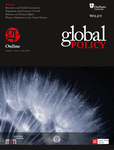

收录于合集

作品简介
【作者】 Vincent Pouliot，麦吉尔大学政治学系教授，主要研究领域是国际组织的政治社会学、全球治理与全球政策制定、多边外交、国际关系和社会理论。
Jean-Philippe Thérien，蒙特利尔大学政治学系终身教授，国际和平与安全研究中心（the Centre for International Peace and Security Studies, CIPSS）主任，主要研究领域是国际制度、南北关系和美洲关系。
【编译】 缪高意（国政学人编译员，中国社会科学院大学）
【校对】 阮含含
【审核】 李雯珲
【排版】 梁鑫昱
【来源】 Pouliot, Vincent, and Thérien, Jean-Philippe. “Global Governance in Practice.” Global Policy 9.2 (2018): 163-172.

期刊简介

《全球政策》是一本创新的跨学科杂志，汇集了世界一流的学者和领先的实践者，旨在分析全球问题的公共和私人解决方案。2018年该杂志影响因子为1.197。
全球治理中的实践研究
Global Governance in Practice
内容摘要
【摘要】
文章关注全球治理的实践，即非正式进程及其政治活动，以此来丰富全球治理的研究。首先，文章解释实践方法的有用性。接着，文章具体研究当代世界政治中四种普遍存在的实践：举办全球会议、委任非政府组织、授权专家组以及建立多方参与的伙伴关系。文章提供上述既定“做事方式”的定义，减少模糊性并分析它们的政治活动。通过案例研究，文章表明，全球治理实践往往会产生复杂的社会效应。通过这种效应，包容性趋势与排斥性趋势结合在一起。包容与排斥的辩证对立是分析的关键，以更好地理解全球公共政策制定的政治活动，如权力的动态变化。
【政策启示】
1. 全球治理是由一系列既定实践构成的，这些实践填补了成文规则的空白。
2. 全球行为体应更多地关注到，新的实践往往会同时产生包容性效应与排斥性效应的结合。
3. 在扩大参与范围的同时，全球会议东道主应注意不要与未参会行为体产生新的分歧。
4. 由于国际组织委任非政府组织是为了加强它们在国际舞台上的话语权，它们应确保这样做不会加剧现有的不平等和政治分歧。
5. 在授权专家组时，全球决策者应考虑到，这种政策进程的开放往往会提高技术官僚精英的影响力，并造成某些观点的边缘化。
6. 在形成多方参与的伙伴关系时，控制各类行为体资源的目标应与培育合作和规范同质性的动态的危险相平衡。
文章导读
01
**引言
**
全球治理的社会基础建设是由典型实践组成的，它们相对稳定且可以预测。这些实践是具有社会意义和有组织的活动模式，往往随着时间的推移而重现。换言之，全球治理是由既定的做事方式构成的，这些方式充当了国家行为体之外的政治活动平台。与多边条约、宪章和决议等规则相比，实践往往不那么正式，因而更难掌握，但它们仍然是全球治理架构的一个重要组成部分。事实上，实践填补了明文规定的程序间的空白，有时甚至与之相抵触。实践构成了辩论、谈判和决定全球公共政策的基线。在这样做的过程中，既定的做事方式有助于将世界政治组织到全球治理的学生尚未掌握的程度。
文章认为，在实践中分析全球治理可以更全面地描绘和解释所涉及的政治活动。实践方法帮助人们关注一些常常是不成文的、但有模式的做事方式，这些方式构成了日常全球公共政策制定的支柱。相较于规范、机制、制度和正式规则，较少的学者关注到全球治理的实践。而实践作为全球治理的一个关键方面值得关注。文章通过确定和描述重要的全球治理实践，并分析其政治影响，以发展关于全球治理实践的见解。
文章分为两部分。第一，解释全球治理的实践方法由什么组成。在现有成果的基础上，文章讨论了实践方法的两个主要分析性贡献：恢复非正式进程，更全面地了解排斥和不平等的根源和动态变化。第二，定义、说明和阐述当代全球治理的四个关键实践：举办全球会议、委任非政府组织、授权专家组以及建立多方参与的伙伴关系。文章通过比较四种实践所产生的包容性和排斥性效应得出结论。文章的分析表明，非正式行动模式不仅是全球公共政策制定更广泛进程的重要组成部分，而且它们产生的政治影响也有着重大的共同点。
02
全球治理的实践方法
实践理论与其说是一种实质性理论，不如说是一种方法论上的模式。实践理论对知识发展最重要的贡献可能停留在最基本的层次上，就是它明确了新的分析单位——实践。实践是指具有社会意义和有组织的活动模式。简单来说，实践就是既定的做事方式。
在全球治理研究中，学者们更加关注准则、规则、机制和制度等分析单位。尽管如此，少数学者已经证明了关注实践有助于解释国际干预、跨国机构、多边外交和全球专家等问题。总的来说，这些研究展示了全球性地模式化做事方式如何成为世界政治的关键政治驱动力。然而，迄今为止还没有学者将全球治理视为一整套有意义的实践。
文章认为，全球治理的实践方法有两个关键贡献。第一，研究全球治理的实践有助于将人们的注意力从正式规则（条约、书面程序等）转移到被学术界忽视的非正式行动模式上。毋容置疑，全球治理的政治活动仍然在很大程度上取决于其制度架构。这就是说，当正式的规则是模糊的或相互矛盾的时，实践者就只能靠试验和即兴发挥的方式来做那些往往会随着时间而积累的事情。在这一过程中，一个典型实践的网络逐渐出现，成为现在全球治理的平台。第二，实践方法通过突出非正式做事方式的结构效应，特别是那些与包容和排斥动态有关的方式，来推动全球治理研究。这就是政治活动和权力关系进入分析图景的地方。实践理论的创新之处在于，实践不再只是待以解释的结果，而是创造和改造世界的积极社会力量的解释项。换言之，既定的做事方式具有社会生产力：它们产生效果，并使其他现象成为可能。实践通过建立政治辩论和互动的基线来塑造全球公共政策制定进程。盛行的是以平行和有时逃避成文化规定的方式实现权力关系。
毫无疑问，全球治理实践具有双面性。从某种意义上来说，实践产生了包容性和排斥性两种效应。在全球治理中，有权力的行为体通过限制决策权来努力保持其主导地位，而边缘和从属的行为体则希望打开政治游戏的大门。一般来说，前者关注效率而后者关注民主化。这种模式化的对抗有助于解释国际实践为何产生冲突的政治效果：全球治理的方式不仅塑造世界政治，而且本身也是斗争的对象。
在理论层面，文章认为，实践塑造了全球治理的社会结构：它们产生了新的社会联系，多样化行为体类型。但是，实践也加强了现有的结构，促成权力关系。
本文认为，大部分实践（如果不是所有的话）都会产生包容和排斥的结合物。虽然这种辩证对立会因情况而异，但也存在一些普遍和共同的特点。研究全球治理的实践不仅是为更好地理解全球治理的强权政治，而且也反驳了学术界的一种倾向，即认为新的全球治理方式越来越具有包容性，因为它们为新的声音提供了政治舞台。虽然这一观点有一些优点，但文章认为，看待此问题不能“一刀切”。
03
全球治理实践的政治活动
在这一节中，文章概述了当代全球治理中普遍存在的四个实践：举办全球会议、委任非政府组织、授权专家组以及建立多方参与的伙伴关系。文章分别给上述四个实践下定义、举例子，说明它的起源和发展，提炼普遍性并分析其政治活动。
文章是根据以下三个标准选择全球治理实践样本的。首先，全球治理的各问题领域都存在这四个实践，它们构成了可观察到的标准行为模式。第二，选取的实践样本在今天非常普遍，并且自冷战结束以来已经在政治上获得显著地位。第三，这四个实践都反映了全球治理日益多中心的性质，因为它们将各个国家、国际组织和其他非国家行为体聚集在一起，为解决全球问题而共同努力。
1.举办全球会议
举办全球会议是指各类行为体（国际组织、国家、非政府组织、企业、工会等）围绕一个全球问题进行的短期会议。
当前全球会议的起源可以追溯到维也纳会议及其后的国际会议。在很长一段时间里，会议外交仍然局限在政府间会议时进行的谈判。自1945年以来，联合国在将会议外交转变为更具包容性和野心的实践方面发挥了关键作用。20世纪70年代是决定性转折点，联合国组织了许多重要的全球会议，特别是关于环境、妇女和粮食的会议。“全球会议”一词首次成为外交术语。今天，虽然联合国仍然是全球会议的主要组织者，但它不再垄断这一实践，许多其他国际组织、国家和非国家行为体也经常举办这类活动。
如今，每年都举行几十次这样的会议，基本覆盖了国际政治中的主要问题。最近重要的全球会议包括千年首脑会议、全球环境首脑会议、世贸组织公共论坛、《渥太华禁雷公约》缔约国会议、世界经济论坛、世界社会论坛和世界旅游发展大会。
由于联合国独一无二的召集力，联合国主办的世界会议仍然是全球会议的典型代表。在机制方面，联合国会议通常是“由于一个新问题的出现而组织的，这个新问题被认为是一个全球问题或者是因为长期存在的问题的规模发生了变化。大会通过一项决议，确定有必要就此问题举行一次会议后，筹备委员会将处理后勤问题（日期、地点和预算），并决定会议议程。根据各国、联合国秘书处、其他监督机构和非政府组织的意见，筹委会编写文件草案，其最终版本由各国代表团在会议上自行谈判。会议期间，非政府组织和私营部门代表在主要会议的同时举行论坛，并对官方代表进行游说。会议结束时，代表们通过政治宣言和行动计划以推动全球治理，这一行为的基础是相信会议出台的文件可以促成新原则、法律法规或制度结构。然而，这种普遍模式并不能描述所有可能的情况。全球会议不再被联合国和国家行为体所垄断，越来越多的全球会议由非政府组织或私营部门发起，全球会议的多样性有所增加。有些会议是临时组织的，而有些会议则每年都会召开。有些侧重于一个特定的主题，而另一些则涉及几个重叠的主题。资金来源和与会人数因所涉及问题和主办会议的组织而异。最后，虽然有些会议的目的是达成一项具有法律约束力的协议，但另一些会议的目的只是提供一个对话和交流信息的论坛。
人们普遍认为，全球会议通过“改变话语、优先事项和政策”来变革世界政治。最重要的是，它们建立了一个“全球集会”，允许新的非国家行为体进入世界舞台并获得国际合法性。事实上，全球会议为公民社会和私营部门的代表提供了前所未有的政治话语权。自相矛盾的是，全球会议也产生排斥性效应，因为它们使内部和外部之间的界限制度化。虽然作为政府谈判的一部分，内部愿意做出妥协，但会议之外的行为体往往施加外部压力，并对谈判过程本身的合法性提出质疑。近年来，几乎所有的全球会议都成为那些谴责虚假民主和现状偏见的运动人士的目标。全球会议的包容性规则仍然受到公共秩序的限制。
全球会议对全球治理产生了多方面的影响。全球会议实践鼓励国际辩论，扩大社会网络，并为全球决策制度带来动力。最重要的是，会议外交促进了非国家行为体参与世界政治。由于所有这些原因，全球会议肯定会继续存在。然而，由于全球会议也为跨国抗议开辟了政治空间，我们仍然无法评估它们对全球治理合法性的影响。
2.委任非政府组织
委任非政府组织，是指国际组织根据某些标准授予非政府组织制度地位的官僚程序。
这个实践的起源可以追溯到20世纪初，当时一些公民社会组织（civil society organizations）获准参加1907年的海牙会议，后来又获准加入国际联盟。鉴于国际劳工组织的正式三方结构，它的成立在历史发展中发挥了特别重要的作用。在联合国，随着时间的推移，特别是在1972年斯德哥尔摩人类环境会议之后，经济及社会理事会的程序增进了非政府组织的参与。1992年里约环境与发展大会是一个分水岭，在那之后，经社理事会第1996/31号决议修订了规则，增加了对非政府组织的委任。这是全球层面委任非政府组织实践的最重要的明文规定。如今，许多国际组织和机构以经社理事会的规则为基础，与公民社会组织互动。而其他国际组织，如世贸组织、世界银行，则制定了自己的程序。20国集团等定期首脑峰会还为公民社会组织设立了类似于C20的平行论坛。
世贸组织提供了有关这个实践的典例。在《马拉喀什协定》第五条第2款的基础上，世贸组织于1996年通过了“与非政府组织关系准则”，将这项任务委托给秘书处。一页的文件中除了“关注与世贸组织有关的事项”外，没有其他委任要求。该文件还将参与限制在观察，而不是被咨询或积极贡献。例如，1999年，738个非政府组织获得西雅图部长级会议的委任，但无权发言或出席工作会议。委任过程很简单：非政府组织通过专门用于每次部长级会议的在线门户网站提交一份申请，说明其工作与世贸组织工作的关系。审批过程由秘书处的一名非政府组织协调员在世贸组织对外关系小组的支持下进行。以前获得委任的非政府组织无需再经历这一过程，只需登记参加即可。除了部长级会议，世贸组织还每年举行一次公共论坛，召集数千名公民社会代表和政府代表。最后，该组织可向每天在总部与世贸组织工作人员互动的非政府组织官员颁发出入证（在编写本报告时，大约有50个正在分发）。这是一种委任形式，允许一些非政府组织参加争端解决程序的公开听证会，甚至提供法庭之友摘要（amicus curiae briefs）。
非政府组织的委任实践因不同的国际组织而异。例如，处理和决定非政府组织委任的并不总是同一类行动体。在联合国，这一进程由各国在一个多边委员会中控制，而在世贸组织，则由秘书处处理这一问题。同时，对于由国际货币基金组织和世界银行召开的公民社会政策论坛，由申请组织总部所在国的办事处执行董事做出决定。它们的认证标准也各不相同。
虽然非政府组织的委任实践明显增加了全球辩论的参与人数，但其政治影响实际上是复杂和多方面的。例如，尽管事先制定了标准，但裁决过程往往相当政治化。委任程序也往往造成不平等的地位。最后，非政府组织之间经常就谁应该被委任而展开激烈的竞争。
非政府组织越来越多地参与多边政治，可能是近几十年来全球治理实践中唯一最重要的变革。但是，委任实践产生了高度不平等的准入和参与，往往有利于来自发达国家的专业化、资源丰富和温和的非政府组织。戈登克和韦斯很好地总结了其中涉及的政治利害关系：“合作和协作可能是好的，但以谁的条件？每个人都喜欢协调，但没有人愿意协调。”更多的包容性不会自动带来平等参与。
3.授权专家组
建立专家组或国际委员会是指全球行为体设立一个专家组，负责调查一个全球问题并提出政治建议。
到20世纪下半叶，这个实践才系统性地从国内治理引进到全球治理中。自20世纪60年代末以来，国际组织、州政府以及私人基金会设立了40多个委员会或专家组。典例包括国际发展委员会（1969年）、世界环境与发展委员会（1987年）、联合国未来问题独立工作组（1995年）、国际干预与国家主权委员会（2001年）、威胁问题高级别小组，挑战与改革（2004年）、联合国与民间社会关系知名人士小组（2004年）和2015年后发展议程高级别知名人士小组（2013年）。
这一进程的许多方面可能各不相同，特别是委员会发起人的身份、审查主题的紧迫性、专员的专门知识和代表性、他们的磋商范围、预算和委员会所受媒体报道的规模。尽管如此，各委员会和专家组之间最重要的区别在于其建议的政治影响。一些国家为全球政策制定提供了重要的影响，而其他国家的影响微乎其微。
作为权威委托程序，设立专家组显然是一种政治举措。通常，该实践在开放政策过程和重视技术知识方面是合法的。其目的是扩大政治辩论，超越官僚或政府间领域，将有专业知识的个人包括在内。这些人的专业知识使他们看起来很公正。然而，如果不质疑专家的公正性到底意味着什么，就无法正确理解所述的包容性目标。大多数委员会成员来自政府，很少来自公民社会，即使有几个委员会是围绕着南北平衡组成的，但它们的成员常常是“以北或以西为中心”。在性别方面，妇女只不过是委员会成员中的一小部分。在意识形态方面，国际委员会有系统地寻求中间路线，排除“极左和更保守的因素”，并倾向于与主要国际组织的自由国际主义相一致的建议。
国际委员会一直是制定国际议程的中心。它们的扩散表明，它们现在已成为全球治理的一种制度化实践。然而，该实践的政治影响仍然是模棱两可的。设立国际委员会和专家组的理由往往是需要将社会辩论非政治化，将其决议委托给知名专家。但事实上，国际委员会通过其权力将公众审议政治化，将某些政治优先事项和意见强加于其他人。
4.建立多方参与的伙伴关系
建立多方参与的伙伴关系是指建立一个松散的、持久的、自愿的、非等级的和有着共同利益的多样化的行为体联合，以期解决共同关心的问题。
建立多方参与的伙伴关系是全球治理中一种相对较新的实践。绝大部分伙伴关系都是在20世纪90年代出现的。例如，世界水坝委员会和森林管理委员会是在里约环境与发展大会之后成立的，目的是争取各行为体参与可持续发展。这一趋势在很大程度上是在“国家的阴影下”出现的。它们与正式的、以条约为基础的组织不同，后者在生产全球公共产品方面的局限性逐渐显露。国家、国际组织、非政府组织和企业越来越多地加入以“多权威”为特征的非正式协会，即权力下放的治理结构。与自上而下的正式法律权威相比，伙伴关系是建立在比较优势的经济基础之上的。通过跨越私人/公共鸿沟的自愿伙伴关系，允许“有利益关系”的行为体从彼此的专业知识、资源或直接接触中获益。
该实践的典例可能是联合国全球契约组织，围绕着十项普遍原则，它将成千上万的大小企业、非政府组织、政府、国际组织和学者聚集在一起。其他多方参与的伙伴关系案例包括世界水坝委员会、全球疫苗免疫联盟以及最近的全球有效发展合作伙伴关系。
多方参与的伙伴关系并不完全相同。最重要的是，伙伴关系往往追求不同的目标，从规则制定到通过提供服务实现规则。它们在问题领域和涉及的缔约方数目方面各不相同。在公共性方面也存在着巨大的差异。
通过在不同类型的行为体之间建立社会联系，多方参与的伙伴关系在全球治理中引发了矛盾的政治效应。有些人认为，伙伴关系是灵活和非等级的，这意味着参与者之间更加平等。然而，也有人认为，“伙伴关系网络往往只是大国和跨国公司等本已强大的行为体实现目标的另一种方式”。此外，多方参与的伙伴关系往往具有“规范同质性”的特征，这意味着那些加入的人往往秉持着相似的世界观，通常排除了持不同意见的声音。其结果是，跨越南北鸿沟的伙伴关系，甚至是南南倡议几乎不存在。参与规则的非正式性，在确保更灵活的同时，也为任意性、自我授权和排斥提供了可能。最后，作为半私人治理的一种形式，建立多方参与的伙伴关系的做法提出了重大的问责挑战。由于缺乏公众监督和透明度，外界往往难以评估这些举措的程序合法性。
04
**结论
**
文章指出，关注实践可以丰富对世界政治的研究。虽然确定全球治理中的核心实践是富有争议的话题，但文章认为，举办全球会议、委任非政府组织、授权专家组以及建立多方参与的伙伴关系代表了既成的做事方式，是大多数学者和外交官容易认识到的全球决策的重要部分。文章还表明，全球治理实践具有复杂的政治效应。值得注意的是，我们研究的实践都是基于它们的包容性潜力而合法化的。事实上，这些实践都有助于扩大非国家行为体的话语权，从而扩大全球政治审议的范围。然而，尽管全球治理实践的包容性有所提高，但其“资产负债表”却比看上去更加复杂。即使它们将参与范围扩大到新的行为体类别，许多新的全球治理实践也鼓励合作、不透明和规范同质性。这种包容与排斥的辩证对立是分析的关键，使我们更好地理解全球政策制定的政治活动，特别是其权力的动态变化。
第一，虽然举行全球会议的实践为新的和更加多样化的行为体提供了话语权，但它也有可能扩大南北之间存在的不平等（例如，当涉及到这些行为体的起源），同时排除了辩论中的激进立场。第二，虽然委任非政府组织可以促进各种形式的全球合作，但这也刺激了笼络、参与政治化和公民社会行为体之间新形式的竞争。第三，虽然授权专家组使得决策过程向独立咨询开放，咨询范围得以扩大，但这也将某些观点边缘化，依靠专家使决策重新政治化。第四，建立多方参与的伙伴关系的实践允许采用非等级、以结果为中心的合作方案，但这些方案仍然依赖于任意的自我选择过程和一定程度的规范同质性。
显然，实践视角不能取代以行为体、制度、规则或理念为中心的其他方法。就其本身而言，它提供的是一个与之前不同的、恰到好处的分析单位，用以研究全球政治活动是如何建构的。然而，实践方法的附加价值怎么强调也不为过。因为，当人们关注非正式的社会关系时，实践有助于揭示全球治理结构中的隐藏层面。因此，实践为一些研究不足的社会进程提供了创新性启示。
本文由国政学人独家编译推荐，文章观点不代表本平台观点，转载请联系授权。


好好学习，天天“在看”
国政学人
支持学术公益与知识传播
微信扫一扫赞赏作者 __赞赏
已喜欢，对作者说句悄悄话
取消 __
发送给作者
发送
最多40字，当前共字
上一页 1/3 下一页
长按二维码向我转账
支持学术公益与知识传播
受苹果公司新规定影响，微信 iOS 版的赞赏功能被关闭，可通过二维码转账支持公众号。